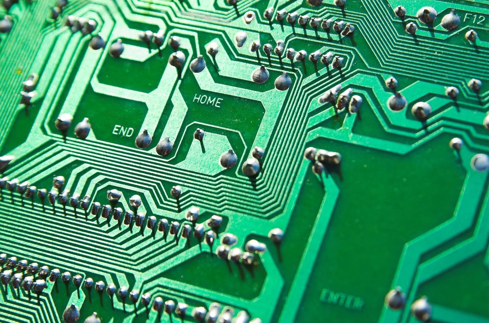

E-Waste is a growing problem accross the globe, something we need to act on now!

Something anyone can do is reduce the amount of new electronics they purchase every year. One of the reasons e-waste has developed into such a big problem is because of the consumer culture surrounding big electronics companies like Apple and Samsung. Understandibly you ay have to purchase new electronics for work, school etc... The problem is over consumption, be sure to keep that in mind next time you purchase a new laptop.
Something else you can do is buy used electronics provided they are working. This is good for two reasons: it reduces waste, and will probably save you some money.
Another way you can help is by properly disposing of old electronics. Many cities will have designated recycling depots where they can ensure the e-waste is dealt with properly and safely. If you follow these few guidelines we can make sure that we reduce E-Waste all accross the globe.